Chapter 5 Results
5.1 Yearly Trend in asset, equity and liability
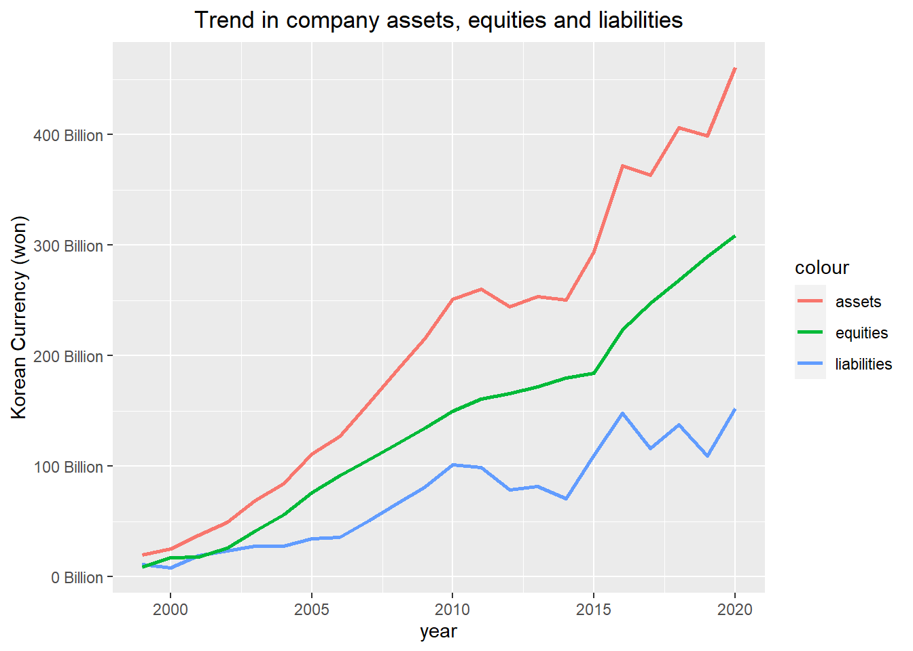
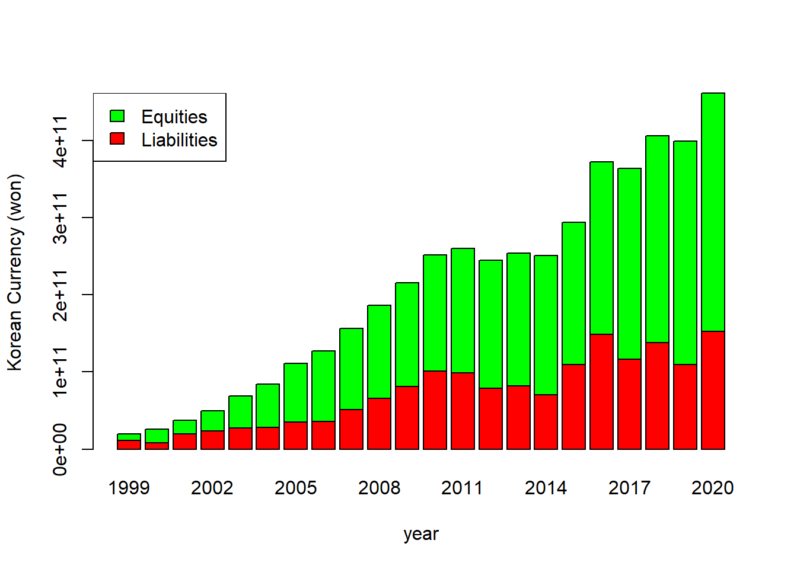
Firstly, changes in total assets, equities and liabilities from 1999 to 2020 is presented in first figure. As observed from above figure, company has performed and managed its risk fairly well since equity has been always larger than liability after publicly listed. Equity to liability also expressed in bar graph in second figure. From this bar graph, it can be assumed that leverage of the company has fairly managed. Detailed analysis in leverage is presented in later paragraph.
Note that 1000 Won is roughly equal to 0.9 USD.
5.2 Yearly Trend in Revenue, Gross Profit and Profit
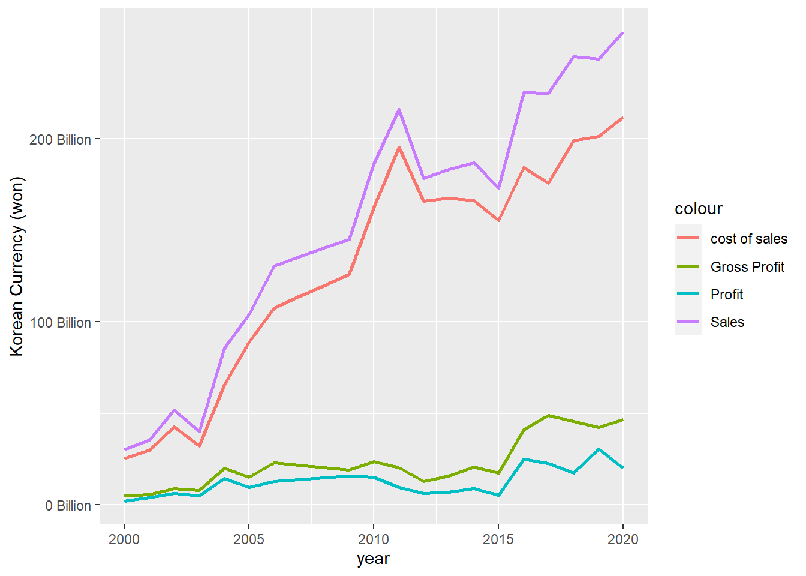
Yearly trend in company revenue, gross profit and sales is presented in above figure. It can be observed that from 2003 to 2015, regardless of the sharp growth in sales(revenue), gross profit and profit is almost flat and didn’t increase much. This is mainly due to increase in cost of sales. As observed in above graph, cost of sales has same trend with revenue(sales) and makes profit doesn’t necessarily have positive relationship with revenue.
In manufacturing business, cost of raw material is crucial factor to determine both revenue and profit. Thus, it is important to buy raw material cheaper as possible. It was later interviewed from company manager that company set various strategies to buy raw material in lowest price as possible. However, raw material(especially stainless steel) price varies with various factors, from political matters to geographical difference. For example, anti-dumping law would put additional imported taxes which makes increase in raw material price. Production stop in nickel mine in Indonesia due to increase in spread of COVID-19 has become a factor increasing raw material price as well.
From 2015 - 2020, revenue and profit has increased. Expansion of business sector to construction business majorly contributed increase in revenue and relative less increase in cost of sales(compared to previous history). Since steal beam is one of fundamental material in construction business, company has been able to obtain price competitiveness.
5.3 Company Revenue based on product proportion
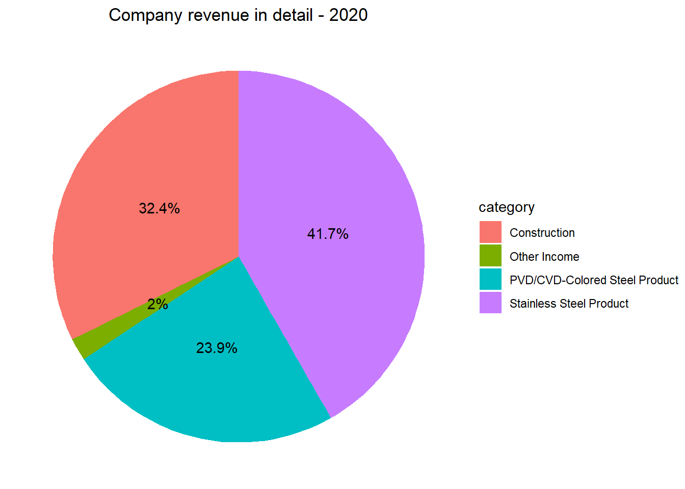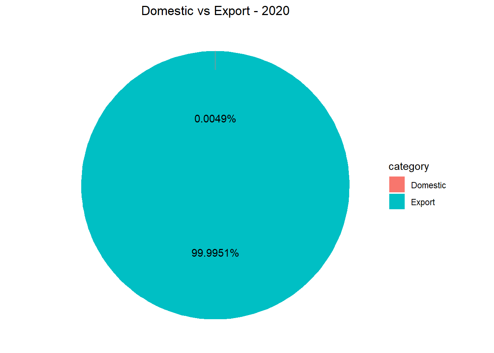
Above pie chart show company’s revenue based on proportion of sales category. Roughly 65 % of company’s revenue consists of steel-based product and 32 % consists of construction. It also shows that company doesn’t involve in any export business. This is due to high labor cost and less price competency in global market.
5.4 Profitability Indicator
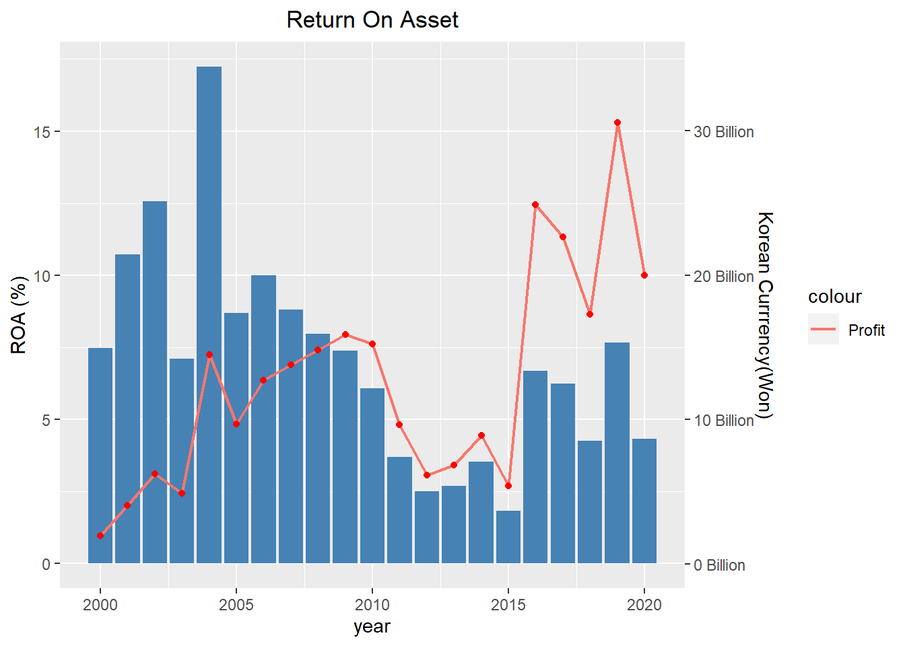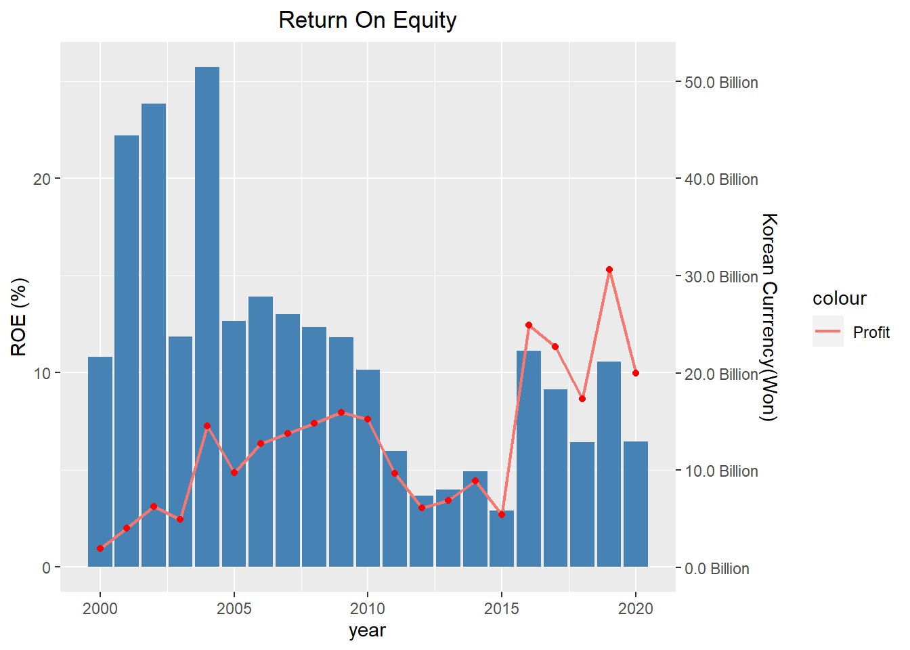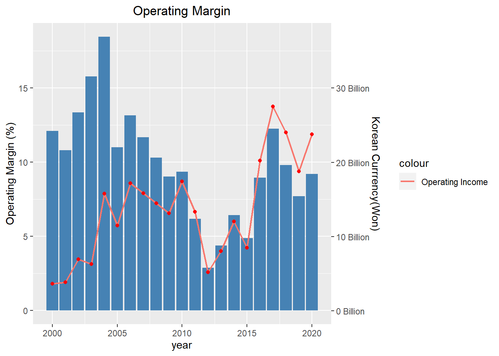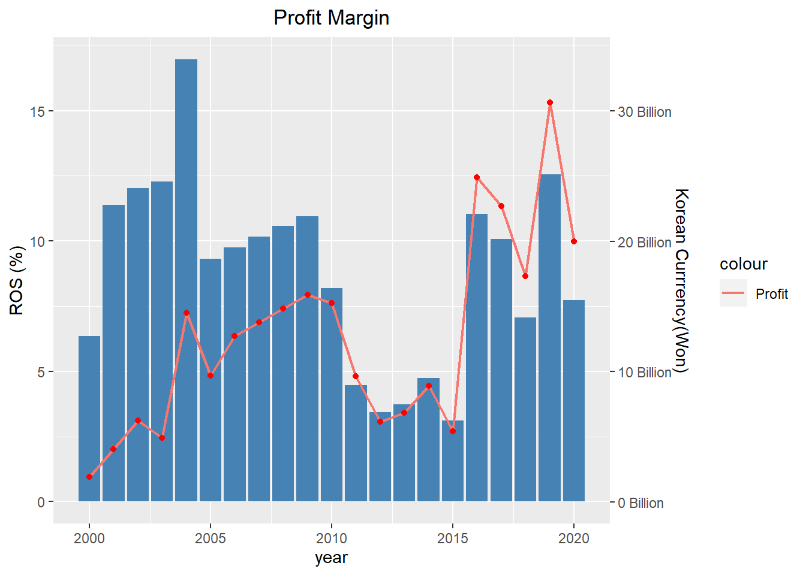
Above shows four histograms which indicate company profitability. First one is return on asset(ROA) which is indicator of how profitable the company is relative to its total asset. Second one is return on equity(ROE) which indicates the interest return of the capital supplied by the shareholder. Third one is operating margin, which indicates how company is efficient in its operations and is good at turning sales into profits. Similar to third one, fourth one is return on sales(ROS), which also indicates how company is efficient in its operation and turning sales into profits. Only difference between operating margin and ROS is calculation of operation margin involves operation profit(revenue less operating expenses), while calculation of ROS involves net profit(operation profit less non-operation expenses).
Unlike 2000 to 2010, through 2010 to 2020, company’s ROA always has been less than 7.5%. This means company’s asset has grown but business has been steady or slightly increase in its net income. Company finds breakthrough after 2015 by adding construction business as a new sector. ROE shows much higher percentage than ROA. This means business is operated in conservative and steady(less debt). From 2010 to 2020, ROS has been varies roughly between 3 % to 12 %. While 3 % is also moderate return on sale considering company’s size and characteristic of manufacturing business, 12 % in 2019 is impressive. However, due to nature of construction business, revenue of construction business is heavily rely on project bidding. Thus, it is important to invest in R&D to develop more technology and seek new business area comes with higher profitability.
5.5 Debt Repayment Ability Indicator
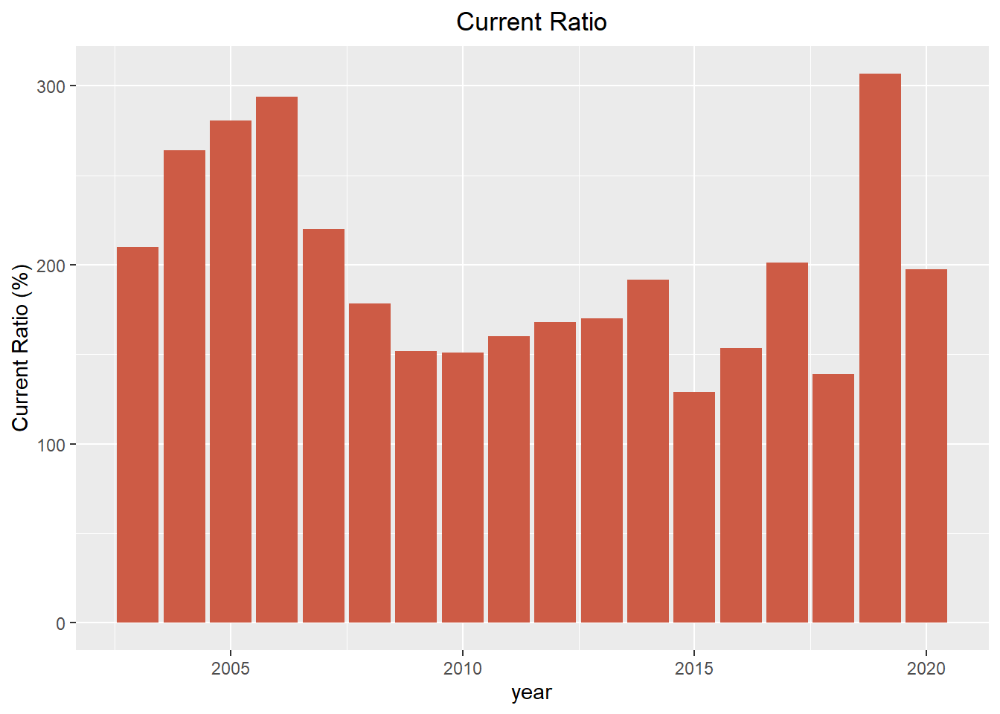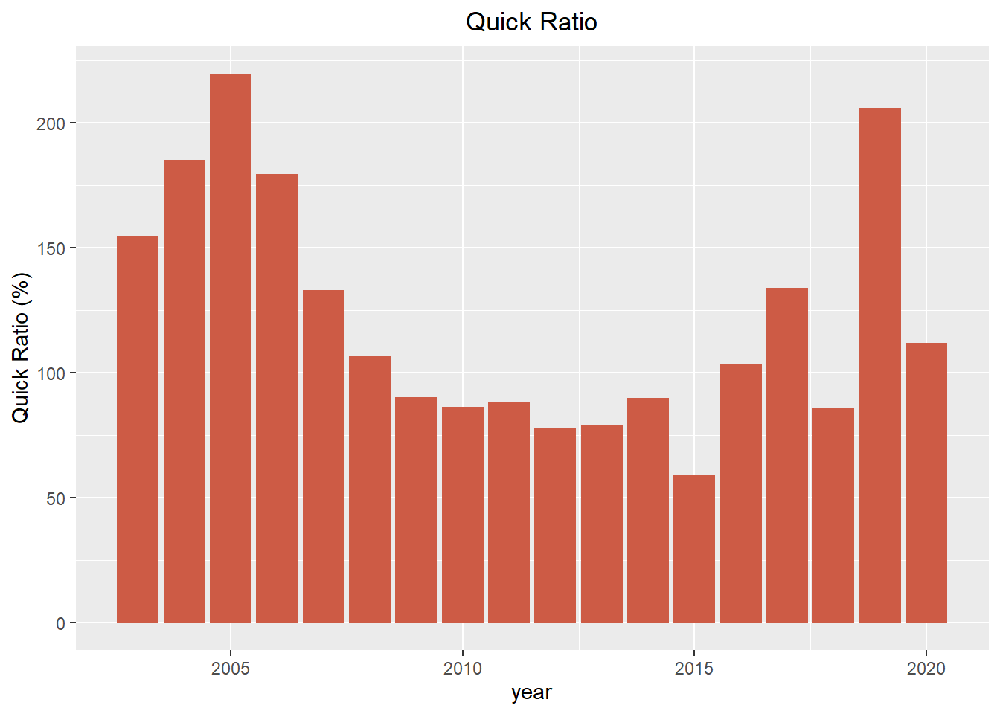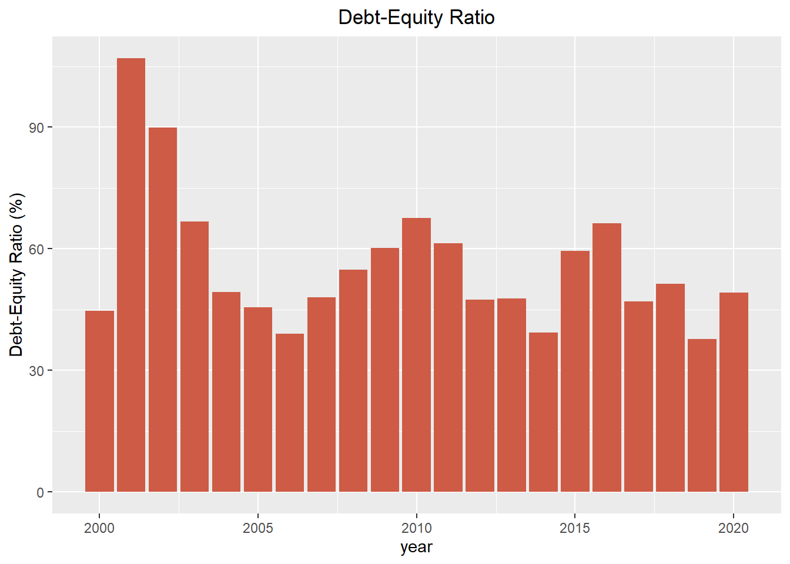
Above shows current-ratio, quick ratio and debt-equity ratio of company. Current ratio indicates company’s ability to pay short-term obligations within one year. Quick ratio is more conservative way to indicate company’s ability to pay short-term debts(It doesn’t count inventory assets since inventory assets are generally regarded as “hard” to sell). Both current ratio and quick ratio have been managed fairly well, since it have always been higher than 100 % through whole year. Debt-equity ratio also has been kept near 60 %, meaning that company has been operated conservatively and steadily.
5.6 Stock Price Analysis
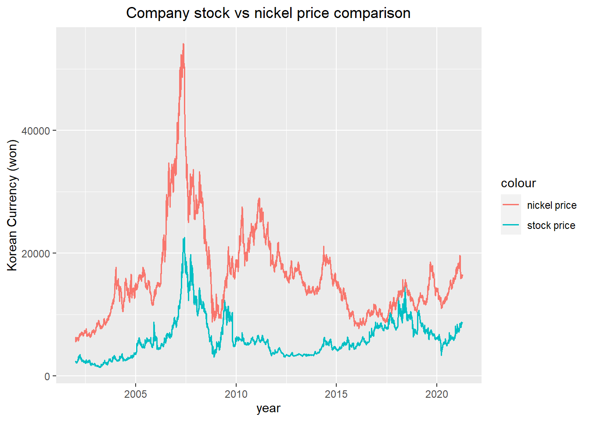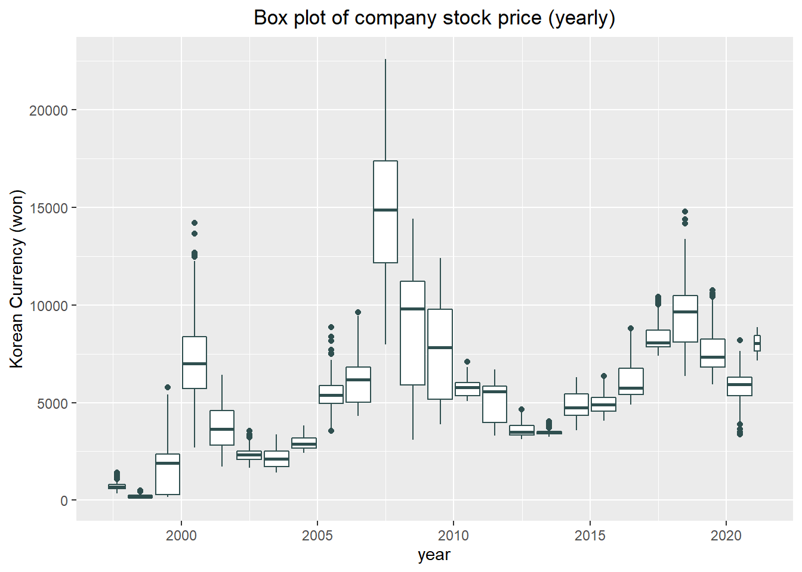
Above shows company stock vs nickel price trend and yearly-based box plot of company stock price. Nowadays nickel price has been a hot potato due to electric car battery, but before then it has been a crucial factor to steel manufacturing company since nickel is most expensive component in stainless steel and played as most important role while determining stainless steel price. It is not perfectly correlated, but in general it can be observed and nickel and company stock price follows similar trend. Stock prices reached its peak from 2008, when nickel price reached to its peak. Furthermore, through 2008 to 2009, company added pipe line factory as its subsidiaries, gave more impact on varying its stock price. However in recent 10 years, company’s stock price has not varied much and decrease in its trend. Due to the nature of manufacturing business in Korea, it is steady business but there is not much room to improve its performance. Furthermore, business itself already reached to red ocean and market price of steel-based product is also controlled by monopoly(POSCO).